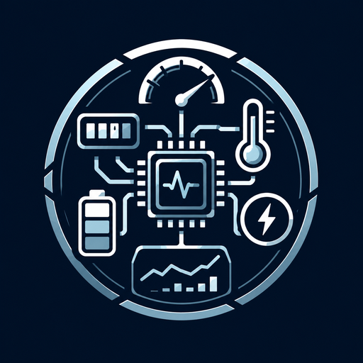
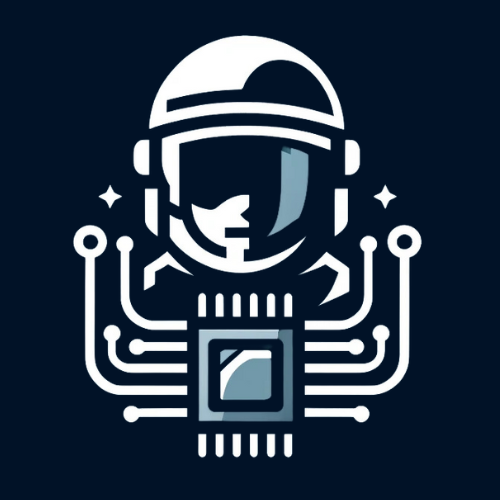
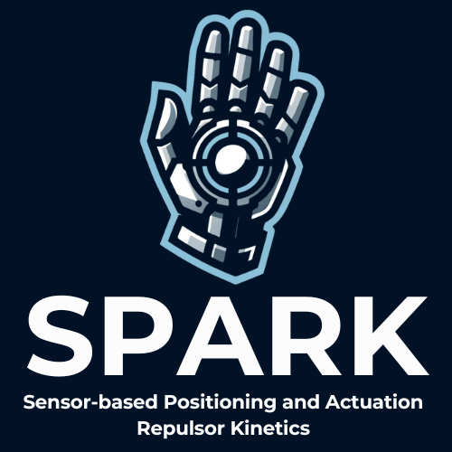
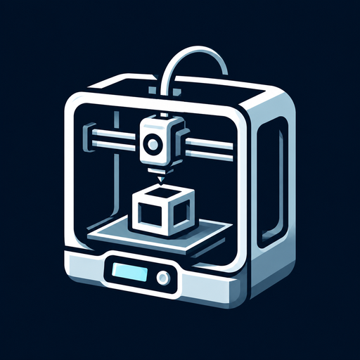

Components
The hardware and firmware I built to empower DAWN.
System Telemetry and Analytics Tracker
Real-time power monitoring and system telemetry for the machine running DAWN.
STAT is the telemetry daemon for the host system — the computer running DAWN. It monitors that machine's power, battery, and system health, supports multiple sensor ICs, and streams over MQTT to the HUD and web dashboard.
- Power Sensors: INA238, INA3221, Daly BMS — voltage, current, power for every rail
- Battery Charge: Chemistry-aware state-of-charge estimation (LiPo, Li-Ion, LiFePO4)
- System Metrics: CPU usage, memory, and fan speed
- MQTT Telemetry: Publishes structured JSON telemetry over MQTT for the HUD and other components
- Python GUI: Real-time visualization dashboard for bench testing

Enhanced Cellular Handling Operations
The suit's link to the outside world — phone calls and SMS, routed straight into DAWN.
ECHO is a standalone daemon for the Waveshare SIM7600G-H 4G modem. It owns the serial port, handles all AT command traffic, and bridges the cellular world to the rest of OASIS via MQTT. DAWN subscribes for incoming calls and SMS, surfacing them as part of the same conversation surface as the voice assistant.
- Phone calls: Dial, answer, hang up, DTMF tones, full call state tracking
- SMS: Send and receive with full Unicode and emoji (UCS2), multi-segment concatenation, AT command injection prevention
- Telemetry: Signal strength, network registration, operator, call state — published every 10 seconds
- Health monitoring: Heartbeat checks, modem lost / reconnected events
- Rate limiting: built-in caps on calls and texts to guard against runaway loops or accidental spam
- Hardware: Two-way call audio bridged over the modem's USB PCM interface

Advanced Utility for Reliable Acquisition
The helmet's senses — environmental awareness and faceplate control.
AURA is an ESP32-S3 sensor suite mounted inside the helmet, now on its v2.5 hardware revision. It continuously monitors environmental conditions and user orientation, feeding data to DAWN and to MIRAGE for the HUD.
- 9-DOF IMU: Accelerometer, gyroscope, magnetometer — heading, pitch, roll
- GPS: Position, speed, altitude for HUD compass and map
- CO2 Sensor: Inside-helmet CO2 concentration monitoring
- Air Quality: VOC, particulate matter for environmental awareness
- Temp/Humidity: Inside-helmet climate monitoring
- Servo Faceplate: Motorized open/close with smooth acceleration
- TFT Display: Local status display on helmet exterior
- FreeRTOS: Real-time task scheduling for sensor fusion
Sensor-based Positioning and Actuation Repulsor Kinetics
The armor and repulsors — effects, gestures, and armor monitoring.
SPARK is the firmware for the armor and its repulsors. It handles gesture detection, LED repulsor animations, wireless communication with the helmet, and audio-synced repulsor sound — and it monitors the charge and temperature of every armor component, reporting to the HUD.
- Gesture Detection: IMU-based hand position and motion recognition
- 19-LED Repulsors: Individually addressable LEDs with charge-up, fire, and idle animations
- Wireless: WiFi over ESP-NOW for low-latency control and data
- Audio Integration: Synchronized repulsor sound effects
- Armor Telemetry: Charge and temperature of every armor component, reported to the MIRAGE HUD

Blueprint Engineering And Component Organizational Nexus
Free 3D-printable components to help integrate OASIS into your suit.
BEACON is a CAD library containing a subset of free 3D-printable components to help you integrate OASIS hardware into your own suit build. HUD display mounts, speaker housings, Jetson sling harness, and more — designed for FDM and resin printing.
- STL files for select hardware enclosures and mounts
- Designed for standard FDM and resin printers
- Reference renders included for each component
